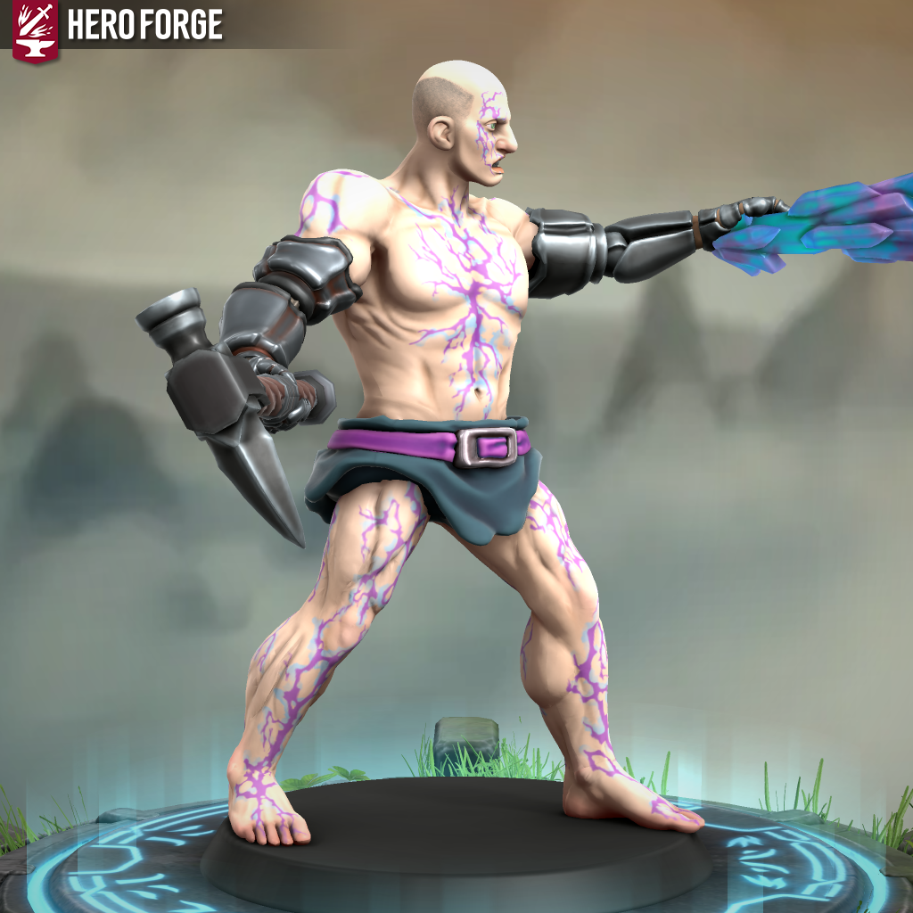

Delvun Ironhands - Is This Anything?

Meet Delvun Ironhands
He was a soldier before he was a story. Reliable, unremarkable, the kind of Goliath whose name you learned because he was always where he was supposed to be. His unit called him Ironhands because of his grip. It used to be a compliment.
The enemy unit that captured him wanted to know where his company was headed. A small thing, really. A road or direction or timeline that would have expired in a week regardless. Delvun knew, but would not say. They decided that if his hands were what he was known for, his hands would be the thing they would take. They were wrong that it would work, and it cost Delvun everything.
He came home to a discharge and a set of empty sleeves. The army that had shaped him looked at what was left and decided it was not enough.
It took a long time to save for one arm. But eventually he did. The surgeon bolted on something functional and may have mentioned in passing that the previous owner had been a mage of some kind. Delvun was too busy having a hand again to hear it.
It didn’t take nearly as long to save up for the second arm. This one from a different doctor in a different back alley and belonged to a fighter whose name nobody would ever know. The two arms do not match. They have never matched, and he has stopped noticing.
The first arm announced itself later, quietly, the way a stranger clears their throat in a room you thought was empty. The left hand reached for something and got more than intended. Now he’s paying attention.
He does “freelance work” now, but really it’s adventuring. The war pick sits in his right hand, the hand that knows how to wield. The left hand stays open, ready to point when necessary.
His old unit still calls him Ironhands, as does everybody else, but the name means something different now depending on who says it and whether they knew him before. He just wishes, every now and then, that maybe his left hand would close the way it used to.
Delvun Ironhands is a Goliath Eldritch Knight, a soldier built for the line and rebuilt out of scraps. He stands nearly eight feet tall, his two mechanical arms mismatched in material and construction, the right hand wrapped around a war pick, the left hanging open at his side. He fights with the economy of someone who was trained, and the stubbornness of someone who survived. In combat, he closes distance, holds position, and lets the left hand speak when words run out. Thunderwave pushes, shocking grasp reaches, shield and absorb elements are the habits of a man who has already lost too much to lose anything else so carelessly. Outside of combat, he reads as military, moves as military, and takes orders from nobody.